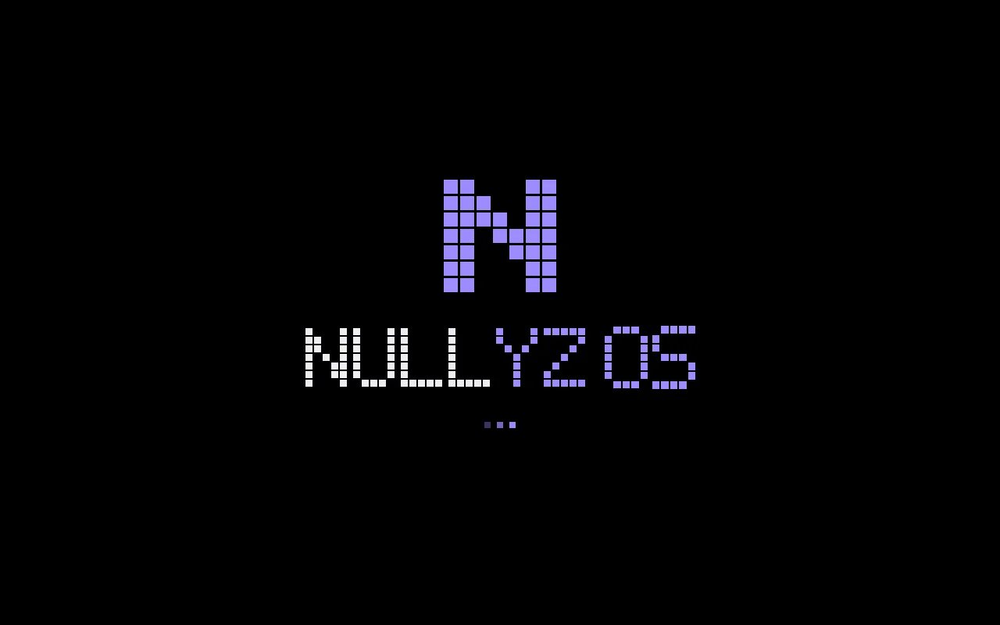
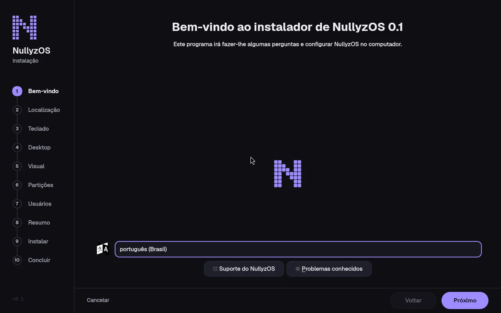
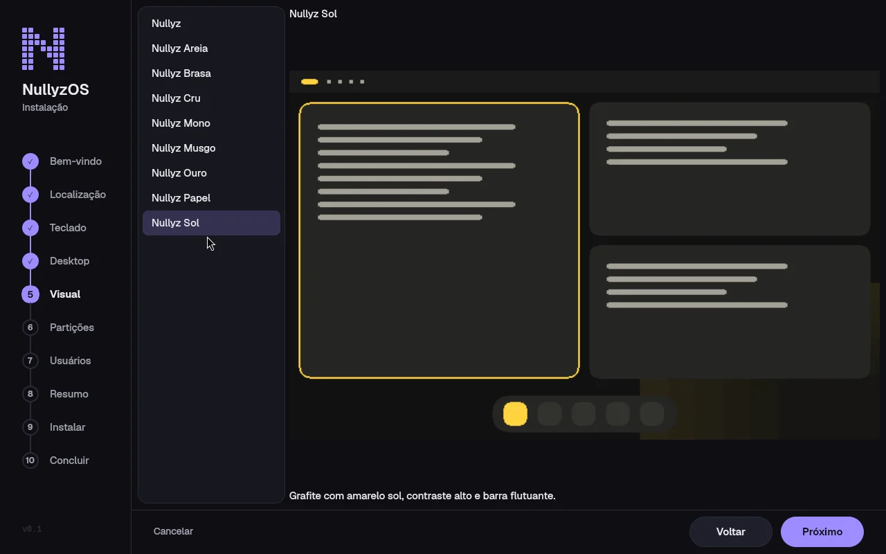
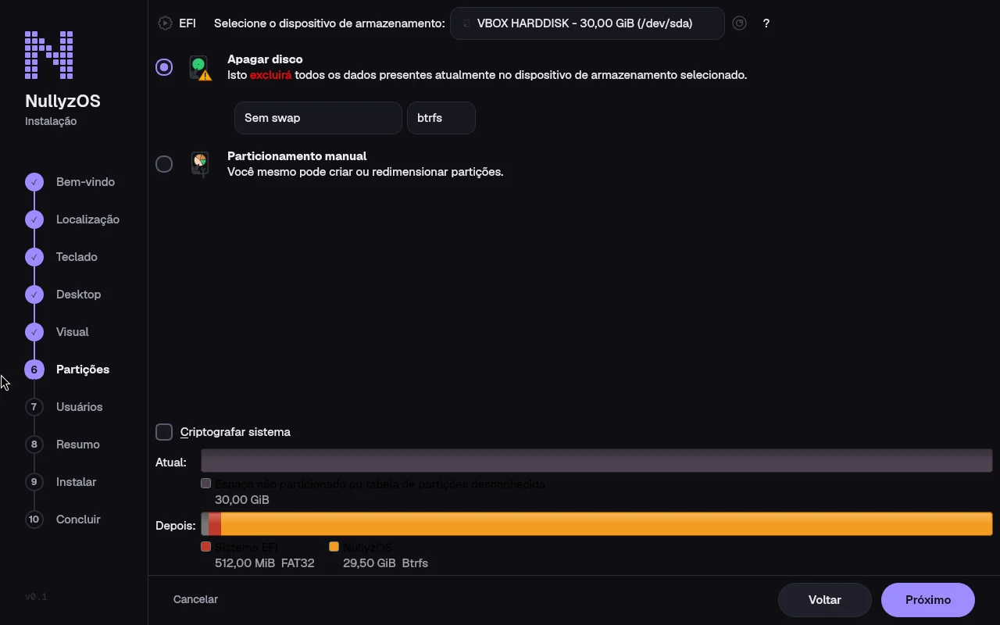
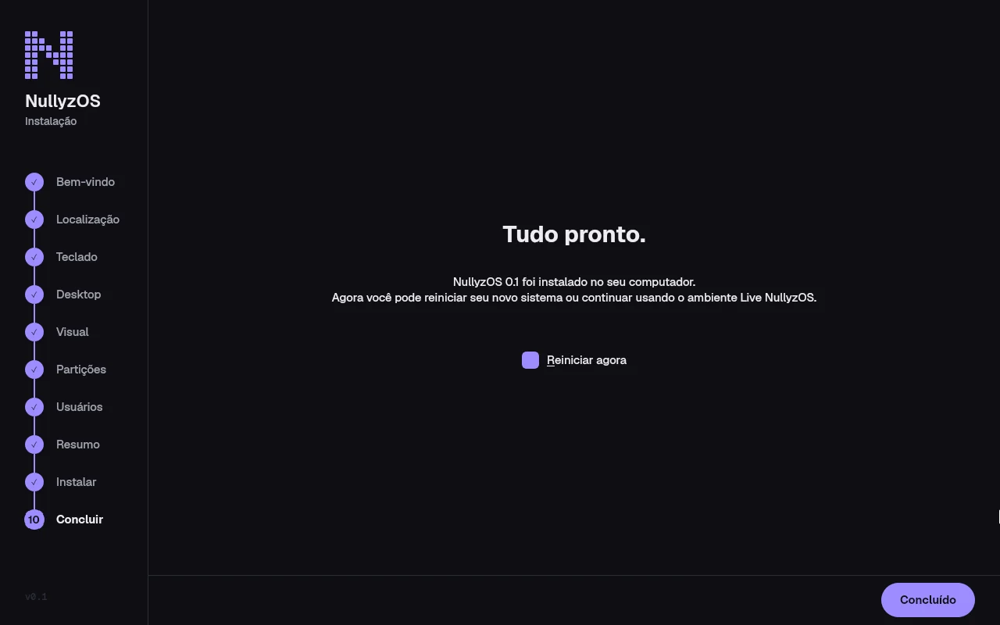
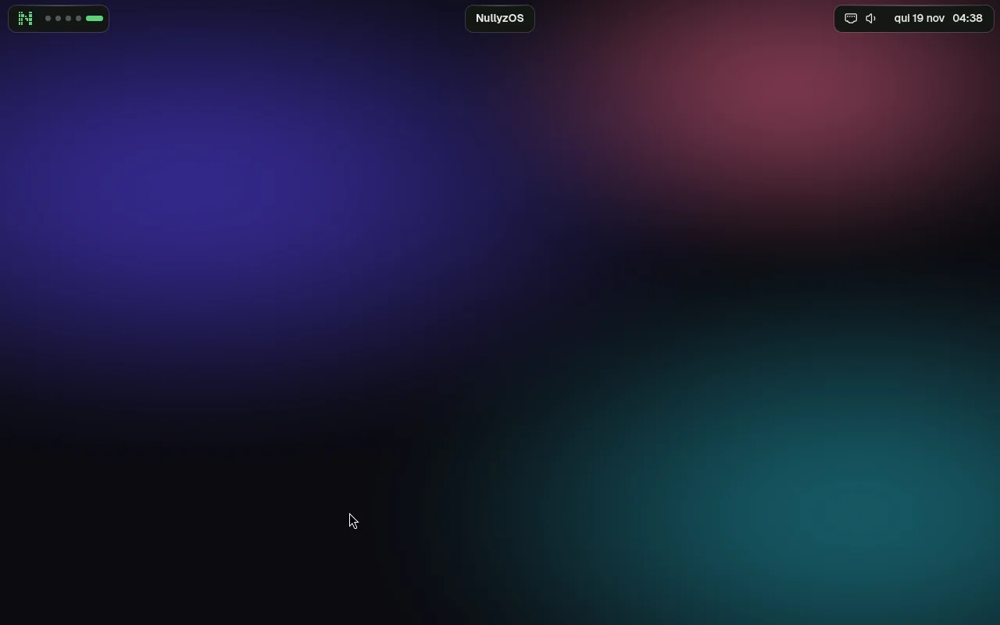

Instalar o NullyzOS
Do download ao primeiro login, na ordem em que as coisas aparecem.
-
1
Baixe e confira a ISO
Baixe a ISO (cerca de 1,7 GB), o
SHA256SUMSe a assinatura na página da versão. Depois confira, na pasta onde baixou:sha256sum -c SHA256SUMSGet-FileHash .\nullyzos*.iso -Algorithm SHA256No Linux tem de aparecer OK. No Windows, o número tem de ser igual ao que está dentro do
SHA256SUMS. Diferente? Baixe de novo. -
2
Grave num pendrive
Use um pendrive de 8 GB ou mais. Tudo o que estiver nele será apagado.
WindowsRufus: escolha a ISO e, se ele perguntar, o modo "DD".Qualquer sistemaVentoy (copie a ISO para o pendrive) ou Fedora Media Writer. -
3
Ligue pelo pendrive
Com o pendrive conectado, ligue o computador e aperte a tecla do menu de boot: F12, F8, F11 ou Esc, depende da marca. Escolha o pendrive. O N do NullyzOS aparece enquanto ele carrega.
Secure BootSe não aparecer o pendrive ou der erro de assinatura, desligue o Secure Boot na BIOS. O NullyzOS ainda não é assinado para ele.
A abertura, ao ligar pelo pendrive. -
4
Idioma, local e teclado
O instalador abre sozinho. Os passos ficam numerados à esquerda, como neste guia. Escolha português (Brasil), a sua cidade e o teclado. Para teclado brasileiro, Português (Brasil) ABNT2: a prévia mostra as letras de cada tecla.

Boas-vindas, com os passos à esquerda. -
5
Desktop e visual
Escolha o desktop: Hyprland (leve, janelas lado a lado) ou KDE Plasma (completo e familiar). Depois o visual: cada rice mostra uma prévia. Ele já vem aplicado no primeiro login, e dá para trocar depois.

O passo Visual, com a prévia de cada rice. -
6
Disco e criptografia
Escolha Apagar disco, que faz tudo sozinho. Lá embaixo, acima das barras "Atual" e "Depois", marque Criptografar sistema e crie a frase do disco: ela protege seus arquivos se o computador for perdido ou roubado.
Use só letras, números e hífen na frase do discoAo ligar o computador, a tela que pede essa frase usa o teclado americano. Ç, acentos e alguns símbolos saem em outras teclas e a frase não confere.
"Criptografar sistema" fica embaixo, acima das barras do disco. -
7
Seu usuário
Nome, nome de usuário e senha. A senha precisa ter pelo menos 8 caracteres; é ela que você usa para entrar e para mudanças de administrador. Não dá para usar root: a conta root vem bloqueada.
-
8
Resumo e instalação
Confira o resumo e clique em Instalar. Com internet, ele baixa o navegador e as últimas atualizações e liga o firewall e os snapshots. No fim aparece Tudo pronto: marque "Reiniciar agora", clique em Concluído e tire o pendrive.

Tudo pronto. -
9
Primeiro login
Se marcou a criptografia, digite a frase do disco quando o computador pedir. Na tela de login, entre com a sua senha. O rice escolhido já está lá. Para começar: Super Espaço busca apps e Super , abre as Configurações.

Primeiro login com o rice Musgo.